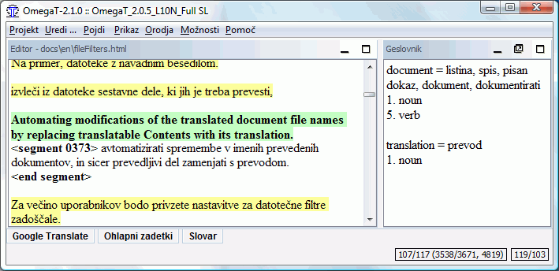
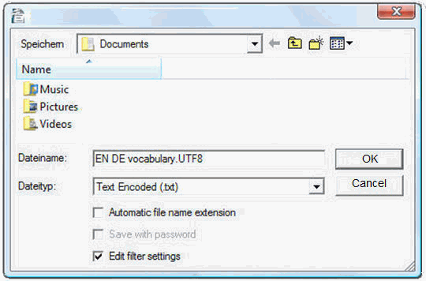

Glosariusze
Glosariusze (słowniki użytkownika) to pliki tworzone i uaktualniane ręcznie, do używania w OmegaT.
Jeżeli projekt OmegaT zawiera przynajmniej jeden glosariusz, terminy z glosariusza, które znajdują się również w aktywnym segmencie, będą automatycznie wyświetlone w oknie Glosariusze.
Użycie
Aby używać istniejącego glosariusza, wystarczy umieścić go w katalogu /glossary po stworzeniu projektu. OmegaT automatycznie wykrywa pliki glosariuszy w tym katalogu, kiedy projekt jest otwierany. Terminy występujące w aktywnym segmencie, które OmegaT znajduje w pliku glosariusza (plikach glosariuszy), są wyświetlane w oknie "Glosariusze":

Słowo przed znakiem "=" jest terminem źródłowym, a jego tłumaczeniem jest słowo (słowa) za znakiem "=". Hasło słownikowe może mieć dodany komentarz (np. "transitive verb" dla drugiej pozycji). Funkcja glosariusza znajduje tylko dokładne dopasowania do hasła glosariusza (np. nie znajduje form odmienionych itp.). Można dodać ręcznie nowe terminy do pliku (plików) glosariusza podczas tłumaczenia (np. w edytorze tekstu).
Format pliku
Pliki glosariuszy to po prostu pliki tekstowe zawierające listy w trzech kolumnach oddzielonych znakami tabulacji. Terminy źródłowe i docelowe muszą znajdować się odpowiednio w pierwszej i drugiej kolumnie . Trzecia kolumna może być wykorzystana na dodatkowe informacje. Pliki glosariuszy mogą być kodowane albo w domyślnym kodowaniu systemu operacyjnego (z rozszerzeniem .tab), albo w kodowaniu UTF-8 (z rozszerzeniem .utf8). Kodowanie Unicode (UTF8) jest preferowane z oczywistych względów.
Jak tworzyć glosariusze
Przedstawiona tu metoda jest niezawodna, jeśli postępuje się dokładnie według niej. Potrzebny jest do tego OpenOffice.org Writer, więc - jeśli jeszcze tego nie zrobiłeś - pobierz i zainstaluj OpenOffice.org. Uruchom OpenOffice.org i otwórz nowy dokument tekstowy lub uruchom OpenOffice.org Writer.
W pustym dokumencie wpisz swoje terminy glosariuszowe w następujący sposób: termin w języku źródłowym, znak tabulacji, termin w języku docelowym, znak tabulacji, komentarz lub wyjaśnienie do tego punktu, klawisz Enter. Znak tabulacji wprowadza się klawiszem "tabulator" znajdującym się z lewej strony klawiatury. Jeśli nie chcesz dodawać żadnych komentarzy, możesz pominąć drugi znak tabulacji. "Termin" może być pojedynczym słowem lub całym wyrażeniem. W następnej linii wpisz następny termin i jego tłumaczenie.
Kiedy wprowadzanie terminów zostanie zakończone, będziesz miał dwie kolumny terminów, terminy w języku źródłowym po lewej, a odpowiadające im terminy w języku docelowym po prawej, i być może także trzecią kolumnę, zawierającą komentarze i wyjaśnienia. Znaki tabulacji (→ w przykładzie poniżej) i Enter (¶ ) można uwidocznić klikając ikonę ¶ na Standardowym pasku narzędzi. Oto kilka linijek z glosariusza angielsko-niemieckiego:
word →Wort→das (-/e/s, Wörter/-e)¶
small house→Häuschen→das,
(pl Häuschen)¶
dog →Hund→m, f Hündin ¶
horse→Pferd→n, m Hengst f Stute n Fohlen¶
NIE używaj funkcji "kolumny" w OpenOffice.org do tworzenia kolumn: po prostu rozdziel każdą parę terminów w języku źródłowym i docelowym pojedynczym znakiem tabulacji.
Po zakończeniu wpisywania haseł, wybierz Plik > Zapisz jako. W polu "Nazwa pliku", wprowadź nazwę dla twojego pliku glosariusza, z rozszerzeniem ".utf8" (np. "MyGlossary.utf8"). W polu "Zapisz jako typ" wybierz "Tekst zakodowany (.txt.)". Odznacz opcję "Automatyczne rozszerzenie nazwy pliku" i zaznacz "Edytuj ustawienia filtru":

Potwierdź wybierając "Zapisz". Pojawi się okno dialogowe z dwoma możliwościami: "Zachowaj bieżący format" i "Zapisz w formacie ODF". Wybierz "Zachowaj bieżący format", aby zapisać plik w formacie "tekst zakodowany".
W oknie dialogowym "Opcje filtra ASCII" (patrz poniżej), wybierz zestaw znaków "Unicode (UTF-8)":

Potwierdź wybierając OK.
Po stworzeniu projektu OmegaT, skopiuj lub przenieś ten plik do katalogu glossary projektu. Jeżeli projekt jest już otwarty, nie trzeba wczytywać go ponownie po skopiowaniu pliku glosariusza. Możesz wprowadzać zmiany w pliku glosariusza, nawet gdy jest on używany w projekcie. Zmiany w glosariuszu są wykrywane w przybliżeniu raz na sekundę, a modyfikacje wczytywane w tle, więc nie ma potrzeby ponownego wczytywania projektu po zapamiętaniu nowego pliku glosariusza.
Kiedy otwierany jest segment zawierający tekst źródłowy, w oknie "Glosariusze" wyświetlone zostaną hasła glosariusza dla tych terminów w segmencie źródłowym, które znajdują się w glosariuszu (lub glosariuszach - możesz mieć więcej niż jeden i mogą one być także przechowywane w podkatalogach katalogu glossary).Korzystanie z glosariuszy Trados Multiterm
Glosariusze utworzone na przykład przy użyciu funkcji Trados Multiterm's text export mogą być używane jako glosariusze OmegaT bez dalszych modyfikacji, pod warunkiem że mają one rozszerzenie .tab i że pola z terminem źródłowym i docelowym stanowią odpowiednio dwa pierwsze pola. Jeżeli eksportujesz używając opcji systemu "Tab-delimited export", będziesz musiał usunąć pierwszych 5 kolumn (Seq. Nr, Date created itd.) występujących przed dwoma pozycjami, które nas interesują.
Typowe problemy z glosariuszami
- Problem: Nie są wyświetlane żadne terminy glosariuszowe.
- Możliwe przyczyny:
- brak pliku glosariusza w katalogu "glossary"
- plik glosariusza jest pusty
- pozycje nie są rozdzielone znakiem TAB
- plik glosariusza nie ma prawidłowego rozszerzenia (.tab lub .utf8)
- nie ma DOKŁADNEGO dopasowania między hasłem glosariusza a tekstem źródłowym w dokumencie - na przykład kiedy pozycja występuje w liczbie mnogiej
- plik glosariusza nie ma prawidłowego kodowania
- w aktywnym segmencie nie ma żadnych terminów, które pasują do terminów w glosariuszu
- jeden lub kilka z powyższych problemów zostało rozwiązanych, ale projekt nie został wczytany ponownie.
- Problem: W oknie Glosariusze niektóre znaki nie są wyświetlane poprawnie (ale te same znaki są wyświetlane poprawnie w oknie Edycji).
- Możliwe przyczyny:
- rozszerzenie nie pasuje do kodowania pliku.